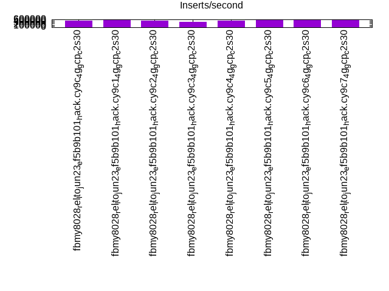
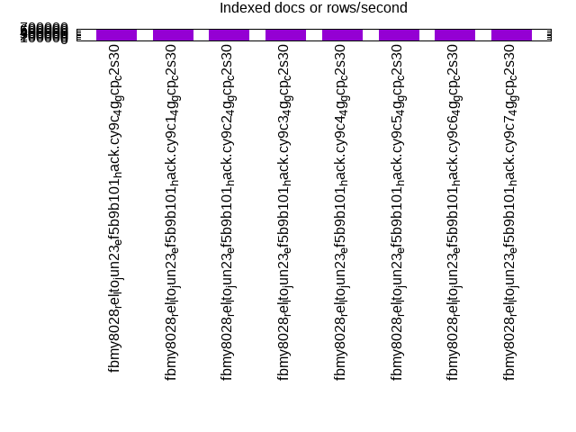
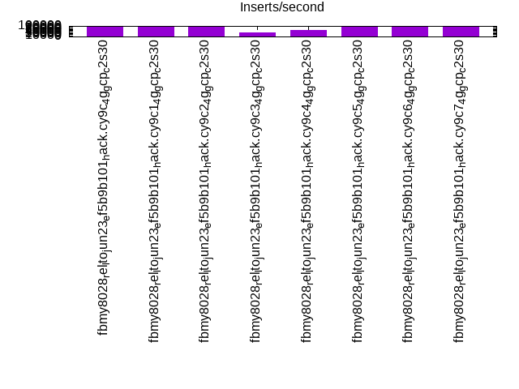
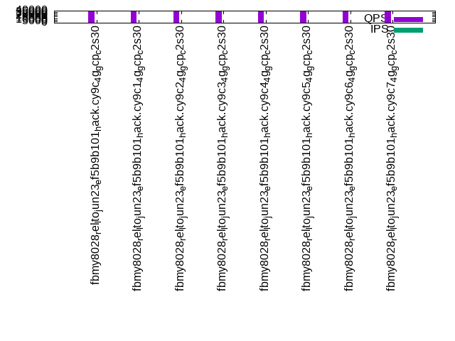
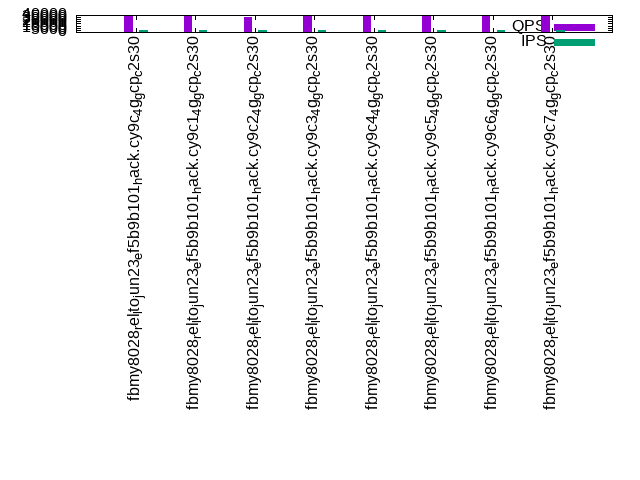
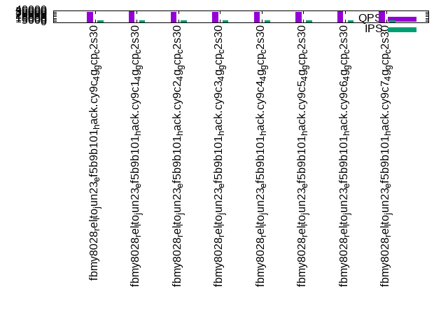

This is a report for the insert benchmark with 160M docs and 8 client(s). It is generated by scripts (bash, awk, sed) and Tufte might not be impressed. An overview of the insert benchmark is here and a short update is here. Below, by DBMS, I mean DBMS+version.config. An example is my8020.c10b40 where my means MySQL, 8020 is version 8.0.20 and c10b40 is the name for the configuration file.
The test server is a c2-standard-30 from GCP with 15 cores, hyperthreads disabled, 120G RAM, XFS + SW RAID 0 on 4 NVMe devices (1.5TB). The benchmark was run with 8 client and there were 1 or 3 connections per client (1 for queries or inserts without rate limits, 1+1 for rate limited inserts+deletes). There are 8 tables, client per table. It loads 20M rows per table without secondary indexes, creates secondary indexes, then inserts 50M rows with a delete per insert to avoid growing the table. It then does 3 read+write tests for 3600s each that do queries as fast as possible with 100, 500 and then 1000 inserts/second/client concurrent with the queries and 1000 deletes/second to avoid growing the table. The database is cached by the OS but not by the 4G RocksDB block cache.
The tested DBMS are:
The numbers are inserts/s for l.i0 and l.i1, indexed docs (or rows) /s for l.x and queries/s for q*.2. The values are the average rate over the entire test for inserts (IPS) and queries (QPS). The range of values for IPS and QPS is split into 3 parts: bottom 25%, middle 50%, top 25%. Values in the bottom 25% have a red background, values in the top 25% have a green background and values in the middle have no color. A gray background is used for values that can be ignored because the DBMS did not sustain the target insert rate. Red backgrounds are not used when the minimum value is within 80% of the max value.
| dbms | l.i0 | l.x | l.i1 | q100.1 | q500.1 | q1000.1 |
|---|---|---|---|---|---|---|
| fbmy8028_rel_lto_jun23_ef5b9b101_hack.cy9c_4g_gcp_c2s30 | 514469 | 667083 | 89027 | 37811 | 36831 | 35440 |
| fbmy8028_rel_lto_jun23_ef5b9b101_hack.cy9c1_4g_gcp_c2s30 | 540540 | 678390 | 89266 | 39435 | 38077 | 36926 |
| fbmy8028_rel_lto_jun23_ef5b9b101_hack.cy9c2_4g_gcp_c2s30 | 498442 | 667083 | 90806 | 37316 | 36220 | 34807 |
| fbmy8028_rel_lto_jun23_ef5b9b101_hack.cy9c3_4g_gcp_c2s30 | 428954 | 656148 | 39734 | 38339 | 36885 | 35511 |
| fbmy8028_rel_lto_jun23_ef5b9b101_hack.cy9c4_4g_gcp_c2s30 | 493827 | 661570 | 60196 | 38392 | 37125 | 35606 |
| fbmy8028_rel_lto_jun23_ef5b9b101_hack.cy9c5_4g_gcp_c2s30 | 553633 | 669874 | 92507 | 38307 | 37317 | 35919 |
| fbmy8028_rel_lto_jun23_ef5b9b101_hack.cy9c6_4g_gcp_c2s30 | 555556 | 669874 | 92293 | 39390 | 38336 | 37040 |
| fbmy8028_rel_lto_jun23_ef5b9b101_hack.cy9c7_4g_gcp_c2s30 | 553633 | 658848 | 91387 | 39458 | 38309 | 37001 |
This table has relative throughput, throughput for the DBMS relative to the DBMS in the first line, using the absolute throughput from the previous table. Values less than 0.95 have a yellow background. Values greater than 1.05 have a blue background.
| dbms | l.i0 | l.x | l.i1 | q100.1 | q500.1 | q1000.1 |
|---|---|---|---|---|---|---|
| fbmy8028_rel_lto_jun23_ef5b9b101_hack.cy9c_4g_gcp_c2s30 | 1.00 | 1.00 | 1.00 | 1.00 | 1.00 | 1.00 |
| fbmy8028_rel_lto_jun23_ef5b9b101_hack.cy9c1_4g_gcp_c2s30 | 1.05 | 1.02 | 1.00 | 1.04 | 1.03 | 1.04 |
| fbmy8028_rel_lto_jun23_ef5b9b101_hack.cy9c2_4g_gcp_c2s30 | 0.97 | 1.00 | 1.02 | 0.99 | 0.98 | 0.98 |
| fbmy8028_rel_lto_jun23_ef5b9b101_hack.cy9c3_4g_gcp_c2s30 | 0.83 | 0.98 | 0.45 | 1.01 | 1.00 | 1.00 |
| fbmy8028_rel_lto_jun23_ef5b9b101_hack.cy9c4_4g_gcp_c2s30 | 0.96 | 0.99 | 0.68 | 1.02 | 1.01 | 1.00 |
| fbmy8028_rel_lto_jun23_ef5b9b101_hack.cy9c5_4g_gcp_c2s30 | 1.08 | 1.00 | 1.04 | 1.01 | 1.01 | 1.01 |
| fbmy8028_rel_lto_jun23_ef5b9b101_hack.cy9c6_4g_gcp_c2s30 | 1.08 | 1.00 | 1.04 | 1.04 | 1.04 | 1.05 |
| fbmy8028_rel_lto_jun23_ef5b9b101_hack.cy9c7_4g_gcp_c2s30 | 1.08 | 0.99 | 1.03 | 1.04 | 1.04 | 1.04 |
This lists the average rate of inserts/s for the tests that do inserts concurrent with queries. For such tests the query rate is listed in the table above. The read+write tests are setup so that the insert rate should match the target rate every second. Cells that are not at least 95% of the target have a red background to indicate a failure to satisfy the target.
| dbms | q100.1 | q500.1 | q1000.1 |
|---|---|---|---|
| fbmy8028_rel_lto_jun23_ef5b9b101_hack.cy9c_4g_gcp_c2s30 | 797 | 3987 | 7973 |
| fbmy8028_rel_lto_jun23_ef5b9b101_hack.cy9c1_4g_gcp_c2s30 | 797 | 3987 | 7976 |
| fbmy8028_rel_lto_jun23_ef5b9b101_hack.cy9c2_4g_gcp_c2s30 | 797 | 3987 | 7976 |
| fbmy8028_rel_lto_jun23_ef5b9b101_hack.cy9c3_4g_gcp_c2s30 | 798 | 3988 | 7976 |
| fbmy8028_rel_lto_jun23_ef5b9b101_hack.cy9c4_4g_gcp_c2s30 | 797 | 3986 | 7971 |
| fbmy8028_rel_lto_jun23_ef5b9b101_hack.cy9c5_4g_gcp_c2s30 | 798 | 3988 | 7973 |
| fbmy8028_rel_lto_jun23_ef5b9b101_hack.cy9c6_4g_gcp_c2s30 | 797 | 3987 | 7971 |
| fbmy8028_rel_lto_jun23_ef5b9b101_hack.cy9c7_4g_gcp_c2s30 | 798 | 3987 | 7973 |
| target | 800 | 4000 | 8000 |
l.i0: load without secondary indexes. Graphs for performance per 1-second interval are here.
Average throughput:
Insert response time histogram: each cell has the percentage of responses that take <= the time in the header and max is the max response time in seconds. For the max column values in the top 25% of the range have a red background and in the bottom 25% of the range have a green background. The red background is not used when the min value is within 80% of the max value.
| dbms | 256us | 1ms | 4ms | 16ms | 64ms | 256ms | 1s | 4s | 16s | gt | max |
|---|---|---|---|---|---|---|---|---|---|---|---|
| fbmy8028_rel_lto_jun23_ef5b9b101_hack.cy9c_4g_gcp_c2s30 | 11.006 | 88.823 | 0.152 | 0.005 | 0.014 | 0.239 | |||||
| fbmy8028_rel_lto_jun23_ef5b9b101_hack.cy9c1_4g_gcp_c2s30 | 10.552 | 89.275 | 0.152 | 0.006 | 0.013 | 0.001 | 0.403 | ||||
| fbmy8028_rel_lto_jun23_ef5b9b101_hack.cy9c2_4g_gcp_c2s30 | 10.579 | 89.246 | 0.156 | 0.005 | 0.014 | 0.217 | |||||
| fbmy8028_rel_lto_jun23_ef5b9b101_hack.cy9c3_4g_gcp_c2s30 | 10.771 | 85.303 | 3.885 | 0.026 | 0.015 | 0.254 | |||||
| fbmy8028_rel_lto_jun23_ef5b9b101_hack.cy9c4_4g_gcp_c2s30 | 9.857 | 89.170 | 0.954 | 0.005 | 0.014 | 0.255 | |||||
| fbmy8028_rel_lto_jun23_ef5b9b101_hack.cy9c5_4g_gcp_c2s30 | 10.152 | 89.686 | 0.140 | 0.006 | 0.014 | 0.001 | 0.367 | ||||
| fbmy8028_rel_lto_jun23_ef5b9b101_hack.cy9c6_4g_gcp_c2s30 | 9.373 | 90.474 | 0.133 | 0.004 | 0.016 | 0.001 | 0.369 | ||||
| fbmy8028_rel_lto_jun23_ef5b9b101_hack.cy9c7_4g_gcp_c2s30 | 9.620 | 90.211 | 0.147 | 0.008 | 0.015 | 0.221 |
Performance metrics for the DBMS listed above. Some are normalized by throughput, others are not. Legend for results is here.
ips qps rps rmbps wps wmbps rpq rkbpq wpi wkbpi csps cpups cspq cpupq dbgb1 dbgb2 rss maxop p50 p99 tag 514469 0 0 0.0 437.9 125.2 0.000 0.000 0.001 0.249 65582 70.4 0.127 21 5.0 6.7 1.7 0.239 67326 49064 160m.fbmy8028_rel_lto_jun23_ef5b9b101_hack.cy9c_4g_gcp_c2s30 540540 0 0 0.0 446.5 127.5 0.000 0.000 0.001 0.241 62219 71.4 0.115 20 5.2 6.9 1.8 0.403 71323 48347 160m.fbmy8028_rel_lto_jun23_ef5b9b101_hack.cy9c1_4g_gcp_c2s30 498442 0 0 0.0 431.6 121.3 0.000 0.000 0.001 0.249 66743 69.2 0.134 21 5.1 6.8 1.7 0.217 64830 49046 160m.fbmy8028_rel_lto_jun23_ef5b9b101_hack.cy9c2_4g_gcp_c2s30 428954 0 0 0.0 422.0 126.9 0.000 0.000 0.001 0.303 51198 61.2 0.119 21 7.0 8.7 1.9 0.254 64230 7392 160m.fbmy8028_rel_lto_jun23_ef5b9b101_hack.cy9c3_4g_gcp_c2s30 493827 0 0 0.0 440.7 122.5 0.000 0.000 0.001 0.254 62360 67.1 0.126 20 5.0 6.7 1.7 0.255 68026 25382 160m.fbmy8028_rel_lto_jun23_ef5b9b101_hack.cy9c4_4g_gcp_c2s30 553633 0 0 0.0 483.9 131.2 0.000 0.000 0.001 0.243 64288 72.4 0.116 20 5.1 6.8 1.6 0.367 74219 52064 160m.fbmy8028_rel_lto_jun23_ef5b9b101_hack.cy9c5_4g_gcp_c2s30 555556 0 0 0.0 492.5 130.0 0.000 0.000 0.001 0.240 63990 72.6 0.115 20 5.1 6.7 1.7 0.369 75540 54241 160m.fbmy8028_rel_lto_jun23_ef5b9b101_hack.cy9c6_4g_gcp_c2s30 553633 0 0 0.0 495.2 130.4 0.000 0.000 0.001 0.241 63822 73.4 0.115 20 5.0 6.7 1.7 0.221 74818 50743 160m.fbmy8028_rel_lto_jun23_ef5b9b101_hack.cy9c7_4g_gcp_c2s30
l.x: create secondary indexes.
Average throughput:
Performance metrics for the DBMS listed above. Some are normalized by throughput, others are not. Legend for results is here.
ips qps rps rmbps wps wmbps rpq rkbpq wpi wkbpi csps cpups cspq cpupq dbgb1 dbgb2 rss maxop p50 p99 tag 667083 0 1 0.1 241.8 88.6 0.000 0.000 0.000 0.136 1241 49.1 0.002 11 10.8 12.5 7.4 0.003 NA NA 160m.fbmy8028_rel_lto_jun23_ef5b9b101_hack.cy9c_4g_gcp_c2s30 678390 0 1 0.1 249.2 90.6 0.000 0.000 0.000 0.137 1385 49.2 0.002 11 10.8 12.5 8.5 0.004 NA NA 160m.fbmy8028_rel_lto_jun23_ef5b9b101_hack.cy9c1_4g_gcp_c2s30 667083 0 1 0.1 243.6 89.1 0.000 0.000 0.000 0.137 1326 49.0 0.002 11 10.9 12.6 7.5 0.002 NA NA 160m.fbmy8028_rel_lto_jun23_ef5b9b101_hack.cy9c2_4g_gcp_c2s30 656148 0 1 0.1 253.7 86.6 0.000 0.000 0.000 0.135 1324 49.0 0.002 11 10.8 12.5 7.1 0.002 NA NA 160m.fbmy8028_rel_lto_jun23_ef5b9b101_hack.cy9c3_4g_gcp_c2s30 661570 0 1 0.0 240.3 89.0 0.000 0.000 0.000 0.138 1164 49.5 0.002 11 10.8 12.5 7.2 0.002 NA NA 160m.fbmy8028_rel_lto_jun23_ef5b9b101_hack.cy9c4_4g_gcp_c2s30 669874 0 1 0.1 245.7 91.1 0.000 0.000 0.000 0.139 1224 49.7 0.002 11 10.8 12.5 7.3 0.002 NA NA 160m.fbmy8028_rel_lto_jun23_ef5b9b101_hack.cy9c5_4g_gcp_c2s30 669874 0 1 0.0 244.5 89.7 0.000 0.000 0.000 0.137 1246 49.6 0.002 11 10.8 12.5 8.2 0.002 NA NA 160m.fbmy8028_rel_lto_jun23_ef5b9b101_hack.cy9c6_4g_gcp_c2s30 658848 0 1 0.0 242.2 89.0 0.000 0.000 0.000 0.138 1275 49.5 0.002 11 10.8 12.5 8.2 0.002 NA NA 160m.fbmy8028_rel_lto_jun23_ef5b9b101_hack.cy9c7_4g_gcp_c2s30
l.i1: continue load after secondary indexes created. Graphs for performance per 1-second interval are here.
Average throughput:
Insert response time histogram: each cell has the percentage of responses that take <= the time in the header and max is the max response time in seconds. For the max column values in the top 25% of the range have a red background and in the bottom 25% of the range have a green background. The red background is not used when the min value is within 80% of the max value.
| dbms | 256us | 1ms | 4ms | 16ms | 64ms | 256ms | 1s | 4s | 16s | gt | max |
|---|---|---|---|---|---|---|---|---|---|---|---|
| fbmy8028_rel_lto_jun23_ef5b9b101_hack.cy9c_4g_gcp_c2s30 | 0.013 | 43.612 | 56.191 | 0.161 | 0.018 | 0.001 | 0.002 | 0.002 | 6.699 | ||
| fbmy8028_rel_lto_jun23_ef5b9b101_hack.cy9c1_4g_gcp_c2s30 | 0.014 | 42.705 | 56.871 | 0.290 | 0.118 | 0.002 | 0.590 | ||||
| fbmy8028_rel_lto_jun23_ef5b9b101_hack.cy9c2_4g_gcp_c2s30 | 0.007 | 42.147 | 57.662 | 0.166 | 0.017 | 0.001 | 0.566 | ||||
| fbmy8028_rel_lto_jun23_ef5b9b101_hack.cy9c3_4g_gcp_c2s30 | 0.008 | 43.392 | 49.725 | 1.701 | 5.165 | 0.008 | 0.315 | ||||
| fbmy8028_rel_lto_jun23_ef5b9b101_hack.cy9c4_4g_gcp_c2s30 | 0.010 | 38.588 | 51.691 | 9.614 | 0.097 | 0.204 | |||||
| fbmy8028_rel_lto_jun23_ef5b9b101_hack.cy9c5_4g_gcp_c2s30 | 0.016 | 40.183 | 59.707 | 0.077 | 0.016 | 0.001 | 0.405 | ||||
| fbmy8028_rel_lto_jun23_ef5b9b101_hack.cy9c6_4g_gcp_c2s30 | 0.016 | 39.276 | 60.610 | 0.081 | 0.016 | 0.001 | 0.391 | ||||
| fbmy8028_rel_lto_jun23_ef5b9b101_hack.cy9c7_4g_gcp_c2s30 | 0.022 | 38.083 | 61.794 | 0.085 | 0.016 | 0.001 | 0.426 |
Delete response time histogram: each cell has the percentage of responses that take <= the time in the header and max is the max response time in seconds. For the max column values in the top 25% of the range have a red background and in the bottom 25% of the range have a green background. The red background is not used when the min value is within 80% of the max value.
| dbms | 256us | 1ms | 4ms | 16ms | 64ms | 256ms | 1s | 4s | 16s | gt | max |
|---|---|---|---|---|---|---|---|---|---|---|---|
| fbmy8028_rel_lto_jun23_ef5b9b101_hack.cy9c_4g_gcp_c2s30 | 0.013 | 39.600 | 60.195 | 0.169 | 0.018 | 0.001 | 0.003 | 0.001 | 6.563 | ||
| fbmy8028_rel_lto_jun23_ef5b9b101_hack.cy9c1_4g_gcp_c2s30 | 0.015 | 40.432 | 59.137 | 0.295 | 0.119 | 0.002 | 0.590 | ||||
| fbmy8028_rel_lto_jun23_ef5b9b101_hack.cy9c2_4g_gcp_c2s30 | 0.009 | 36.674 | 63.122 | 0.176 | 0.017 | 0.002 | 0.566 | ||||
| fbmy8028_rel_lto_jun23_ef5b9b101_hack.cy9c3_4g_gcp_c2s30 | 0.011 | 43.748 | 49.366 | 1.700 | 5.167 | 0.008 | 0.316 | ||||
| fbmy8028_rel_lto_jun23_ef5b9b101_hack.cy9c4_4g_gcp_c2s30 | 0.014 | 41.909 | 48.413 | 9.568 | 0.097 | 0.205 | |||||
| fbmy8028_rel_lto_jun23_ef5b9b101_hack.cy9c5_4g_gcp_c2s30 | 0.021 | 42.519 | 57.368 | 0.075 | 0.016 | 0.001 | 0.408 | ||||
| fbmy8028_rel_lto_jun23_ef5b9b101_hack.cy9c6_4g_gcp_c2s30 | 0.031 | 42.703 | 57.173 | 0.078 | 0.015 | 0.001 | 0.391 | ||||
| fbmy8028_rel_lto_jun23_ef5b9b101_hack.cy9c7_4g_gcp_c2s30 | 0.028 | 40.450 | 59.424 | 0.082 | 0.016 | 0.001 | 0.429 |
Performance metrics for the DBMS listed above. Some are normalized by throughput, others are not. Legend for results is here.
ips qps rps rmbps wps wmbps rpq rkbpq wpi wkbpi csps cpups cspq cpupq dbgb1 dbgb2 rss maxop p50 p99 tag 89027 0 3 1.2 466.6 110.8 0.000 0.014 0.005 1.275 69291 65.3 0.778 110 19.2 20.7 6.0 6.699 11892 0 160m.fbmy8028_rel_lto_jun23_ef5b9b101_hack.cy9c_4g_gcp_c2s30 89266 0 3 1.2 463.8 109.9 0.000 0.014 0.005 1.260 51929 61.2 0.582 103 21.7 23.2 6.9 0.590 11837 2597 160m.fbmy8028_rel_lto_jun23_ef5b9b101_hack.cy9c1_4g_gcp_c2s30 90806 0 3 1.3 475.9 114.0 0.000 0.014 0.005 1.286 110681 66.8 1.219 110 20.5 22.0 6.2 0.566 11676 5744 160m.fbmy8028_rel_lto_jun23_ef5b9b101_hack.cy9c2_4g_gcp_c2s30 39734 0 1 0.6 246.8 65.5 0.000 0.014 0.006 1.689 26421 27.3 0.665 103 15.5 17.0 5.9 0.315 749 250 160m.fbmy8028_rel_lto_jun23_ef5b9b101_hack.cy9c3_4g_gcp_c2s30 60196 0 2 0.8 384.4 91.3 0.000 0.014 0.006 1.553 41888 42.4 0.696 106 14.3 15.8 6.0 0.204 8740 899 160m.fbmy8028_rel_lto_jun23_ef5b9b101_hack.cy9c4_4g_gcp_c2s30 92507 0 3 1.3 568.8 134.6 0.000 0.014 0.006 1.490 56184 62.4 0.607 101 13.7 15.2 6.1 0.405 11789 8591 160m.fbmy8028_rel_lto_jun23_ef5b9b101_hack.cy9c5_4g_gcp_c2s30 92293 0 3 1.3 577.3 135.9 0.000 0.014 0.006 1.508 53654 61.8 0.581 100 13.4 15.0 6.9 0.391 11737 8591 160m.fbmy8028_rel_lto_jun23_ef5b9b101_hack.cy9c6_4g_gcp_c2s30 91387 0 3 1.3 548.1 130.8 0.000 0.014 0.006 1.466 51931 63.1 0.568 104 14.2 15.7 6.9 0.426 11587 8590 160m.fbmy8028_rel_lto_jun23_ef5b9b101_hack.cy9c7_4g_gcp_c2s30
q100.1: range queries with 100 insert/s per client. Graphs for performance per 1-second interval are here.
Average throughput:
Query response time histogram: each cell has the percentage of responses that take <= the time in the header and max is the max response time in seconds. For max values in the top 25% of the range have a red background and in the bottom 25% of the range have a green background. The red background is not used when the min value is within 80% of the max value.
| dbms | 256us | 1ms | 4ms | 16ms | 64ms | 256ms | 1s | 4s | 16s | gt | max |
|---|---|---|---|---|---|---|---|---|---|---|---|
| fbmy8028_rel_lto_jun23_ef5b9b101_hack.cy9c_4g_gcp_c2s30 | 96.073 | 3.926 | 0.001 | nonzero | nonzero | 0.018 | |||||
| fbmy8028_rel_lto_jun23_ef5b9b101_hack.cy9c1_4g_gcp_c2s30 | 97.602 | 2.397 | 0.001 | nonzero | 0.015 | ||||||
| fbmy8028_rel_lto_jun23_ef5b9b101_hack.cy9c2_4g_gcp_c2s30 | 94.825 | 5.174 | 0.001 | nonzero | 0.006 | ||||||
| fbmy8028_rel_lto_jun23_ef5b9b101_hack.cy9c3_4g_gcp_c2s30 | 96.773 | 3.225 | 0.001 | nonzero | nonzero | 0.018 | |||||
| fbmy8028_rel_lto_jun23_ef5b9b101_hack.cy9c4_4g_gcp_c2s30 | 96.847 | 3.152 | 0.001 | nonzero | 0.006 | ||||||
| fbmy8028_rel_lto_jun23_ef5b9b101_hack.cy9c5_4g_gcp_c2s30 | 96.831 | 3.168 | 0.001 | nonzero | 0.007 | ||||||
| fbmy8028_rel_lto_jun23_ef5b9b101_hack.cy9c6_4g_gcp_c2s30 | 97.534 | 2.465 | 0.001 | nonzero | 0.006 | ||||||
| fbmy8028_rel_lto_jun23_ef5b9b101_hack.cy9c7_4g_gcp_c2s30 | 97.666 | 2.333 | 0.001 | nonzero | 0.012 |
Insert response time histogram: each cell has the percentage of responses that take <= the time in the header and max is the max response time in seconds. For max values in the top 25% of the range have a red background and in the bottom 25% of the range have a green background. The red background is not used when the min value is within 80% of the max value.
| dbms | 256us | 1ms | 4ms | 16ms | 64ms | 256ms | 1s | 4s | 16s | gt | max |
|---|---|---|---|---|---|---|---|---|---|---|---|
| fbmy8028_rel_lto_jun23_ef5b9b101_hack.cy9c_4g_gcp_c2s30 | 10.646 | 89.352 | 0.002 | 0.006 | |||||||
| fbmy8028_rel_lto_jun23_ef5b9b101_hack.cy9c1_4g_gcp_c2s30 | 7.326 | 92.604 | 0.003 | 0.059 | 0.007 | 0.175 | |||||
| fbmy8028_rel_lto_jun23_ef5b9b101_hack.cy9c2_4g_gcp_c2s30 | 3.188 | 96.811 | 0.002 | 0.007 | |||||||
| fbmy8028_rel_lto_jun23_ef5b9b101_hack.cy9c3_4g_gcp_c2s30 | 5.500 | 94.491 | 0.009 | 0.007 | |||||||
| fbmy8028_rel_lto_jun23_ef5b9b101_hack.cy9c4_4g_gcp_c2s30 | 0.689 | 99.304 | 0.007 | 0.007 | |||||||
| fbmy8028_rel_lto_jun23_ef5b9b101_hack.cy9c5_4g_gcp_c2s30 | 2.792 | 97.205 | 0.003 | 0.006 | |||||||
| fbmy8028_rel_lto_jun23_ef5b9b101_hack.cy9c6_4g_gcp_c2s30 | 2.424 | 97.568 | 0.009 | 0.006 | |||||||
| fbmy8028_rel_lto_jun23_ef5b9b101_hack.cy9c7_4g_gcp_c2s30 | 6.392 | 93.606 | 0.002 | 0.006 |
Delete response time histogram: each cell has the percentage of responses that take <= the time in the header and max is the max response time in seconds. For max values in the top 25% of the range have a red background and in the bottom 25% of the range have a green background. The red background is not used when the min value is within 80% of the max value.
| dbms | 256us | 1ms | 4ms | 16ms | 64ms | 256ms | 1s | 4s | 16s | gt | max |
|---|---|---|---|---|---|---|---|---|---|---|---|
| fbmy8028_rel_lto_jun23_ef5b9b101_hack.cy9c_4g_gcp_c2s30 | 10.849 | 89.151 | 0.003 | ||||||||
| fbmy8028_rel_lto_jun23_ef5b9b101_hack.cy9c1_4g_gcp_c2s30 | 10.583 | 89.340 | 0.009 | 0.056 | 0.012 | 0.134 | |||||
| fbmy8028_rel_lto_jun23_ef5b9b101_hack.cy9c2_4g_gcp_c2s30 | 5.368 | 94.627 | 0.005 | 0.011 | |||||||
| fbmy8028_rel_lto_jun23_ef5b9b101_hack.cy9c3_4g_gcp_c2s30 | 12.078 | 87.915 | 0.007 | 0.007 | |||||||
| fbmy8028_rel_lto_jun23_ef5b9b101_hack.cy9c4_4g_gcp_c2s30 | 7.627 | 92.365 | 0.007 | 0.002 | 0.036 | ||||||
| fbmy8028_rel_lto_jun23_ef5b9b101_hack.cy9c5_4g_gcp_c2s30 | 8.946 | 91.050 | 0.003 | 0.006 | |||||||
| fbmy8028_rel_lto_jun23_ef5b9b101_hack.cy9c6_4g_gcp_c2s30 | 12.038 | 87.951 | 0.010 | 0.007 | |||||||
| fbmy8028_rel_lto_jun23_ef5b9b101_hack.cy9c7_4g_gcp_c2s30 | 13.071 | 86.927 | 0.002 | 0.006 |
Performance metrics for the DBMS listed above. Some are normalized by throughput, others are not. Legend for results is here.
ips qps rps rmbps wps wmbps rpq rkbpq wpi wkbpi csps cpups cspq cpupq dbgb1 dbgb2 rss maxop p50 p99 tag 797 37811 0 0.0 15.1 2.1 0.000 0.000 0.019 2.707 145860 54.7 3.858 217 11.9 14.1 6.0 0.018 4763 3948 160m.fbmy8028_rel_lto_jun23_ef5b9b101_hack.cy9c_4g_gcp_c2s30 797 39435 0 0.0 16.5 2.3 0.000 0.000 0.021 2.949 151239 54.7 3.835 208 12.0 14.1 6.0 0.015 4939 4123 160m.fbmy8028_rel_lto_jun23_ef5b9b101_hack.cy9c1_4g_gcp_c2s30 797 37316 0 0.0 16.2 2.3 0.000 0.000 0.020 2.906 148531 54.3 3.980 218 12.0 14.2 5.9 0.006 4683 3708 160m.fbmy8028_rel_lto_jun23_ef5b9b101_hack.cy9c2_4g_gcp_c2s30 798 38339 0 0.0 13.0 1.8 0.000 0.000 0.016 2.327 147869 54.5 3.857 213 12.3 14.5 5.8 0.018 4811 4427 160m.fbmy8028_rel_lto_jun23_ef5b9b101_hack.cy9c3_4g_gcp_c2s30 797 38392 0 0.0 11.9 1.7 0.000 0.000 0.015 2.146 148040 54.6 3.856 213 12.8 14.9 6.0 0.006 4875 4539 160m.fbmy8028_rel_lto_jun23_ef5b9b101_hack.cy9c4_4g_gcp_c2s30 798 38307 0 0.0 11.4 1.5 0.000 0.000 0.014 1.914 147539 54.3 3.852 213 12.4 14.5 6.2 0.007 4811 4491 160m.fbmy8028_rel_lto_jun23_ef5b9b101_hack.cy9c5_4g_gcp_c2s30 797 39390 0 0.0 12.9 2.0 0.000 0.000 0.016 2.506 150939 54.5 3.832 208 12.6 14.8 6.3 0.006 4939 4477 160m.fbmy8028_rel_lto_jun23_ef5b9b101_hack.cy9c6_4g_gcp_c2s30 798 39458 0 0.0 11.9 1.5 0.000 0.000 0.015 1.988 151125 54.7 3.830 208 12.4 14.6 6.1 0.012 4923 4667 160m.fbmy8028_rel_lto_jun23_ef5b9b101_hack.cy9c7_4g_gcp_c2s30
q500.1: range queries with 500 insert/s per client. Graphs for performance per 1-second interval are here.
Average throughput:
Query response time histogram: each cell has the percentage of responses that take <= the time in the header and max is the max response time in seconds. For max values in the top 25% of the range have a red background and in the bottom 25% of the range have a green background. The red background is not used when the min value is within 80% of the max value.
| dbms | 256us | 1ms | 4ms | 16ms | 64ms | 256ms | 1s | 4s | 16s | gt | max |
|---|---|---|---|---|---|---|---|---|---|---|---|
| fbmy8028_rel_lto_jun23_ef5b9b101_hack.cy9c_4g_gcp_c2s30 | 93.790 | 6.205 | 0.005 | nonzero | nonzero | 0.023 | |||||
| fbmy8028_rel_lto_jun23_ef5b9b101_hack.cy9c1_4g_gcp_c2s30 | 95.453 | 4.542 | 0.005 | nonzero | 0.014 | ||||||
| fbmy8028_rel_lto_jun23_ef5b9b101_hack.cy9c2_4g_gcp_c2s30 | 91.877 | 8.120 | 0.003 | nonzero | nonzero | 0.017 | |||||
| fbmy8028_rel_lto_jun23_ef5b9b101_hack.cy9c3_4g_gcp_c2s30 | 93.620 | 6.374 | 0.006 | nonzero | nonzero | 0.016 | |||||
| fbmy8028_rel_lto_jun23_ef5b9b101_hack.cy9c4_4g_gcp_c2s30 | 93.813 | 6.178 | 0.008 | nonzero | nonzero | 0.026 | |||||
| fbmy8028_rel_lto_jun23_ef5b9b101_hack.cy9c5_4g_gcp_c2s30 | 94.084 | 5.911 | 0.005 | nonzero | nonzero | 0.038 | |||||
| fbmy8028_rel_lto_jun23_ef5b9b101_hack.cy9c6_4g_gcp_c2s30 | 95.167 | 4.827 | 0.006 | nonzero | nonzero | 0.017 | |||||
| fbmy8028_rel_lto_jun23_ef5b9b101_hack.cy9c7_4g_gcp_c2s30 | 94.975 | 5.018 | 0.007 | nonzero | nonzero | 0.017 |
Insert response time histogram: each cell has the percentage of responses that take <= the time in the header and max is the max response time in seconds. For max values in the top 25% of the range have a red background and in the bottom 25% of the range have a green background. The red background is not used when the min value is within 80% of the max value.
| dbms | 256us | 1ms | 4ms | 16ms | 64ms | 256ms | 1s | 4s | 16s | gt | max |
|---|---|---|---|---|---|---|---|---|---|---|---|
| fbmy8028_rel_lto_jun23_ef5b9b101_hack.cy9c_4g_gcp_c2s30 | 14.273 | 85.689 | 0.037 | 0.001 | 0.060 | ||||||
| fbmy8028_rel_lto_jun23_ef5b9b101_hack.cy9c1_4g_gcp_c2s30 | 19.781 | 80.215 | 0.004 | nonzero | 0.096 | ||||||
| fbmy8028_rel_lto_jun23_ef5b9b101_hack.cy9c2_4g_gcp_c2s30 | 4.751 | 95.230 | 0.019 | nonzero | nonzero | 0.070 | |||||
| fbmy8028_rel_lto_jun23_ef5b9b101_hack.cy9c3_4g_gcp_c2s30 | 16.187 | 83.458 | 0.355 | 0.016 | |||||||
| fbmy8028_rel_lto_jun23_ef5b9b101_hack.cy9c4_4g_gcp_c2s30 | 1.943 | 95.968 | 2.082 | 0.007 | 0.028 | ||||||
| fbmy8028_rel_lto_jun23_ef5b9b101_hack.cy9c5_4g_gcp_c2s30 | 12.394 | 87.557 | 0.047 | 0.002 | 0.001 | 0.075 | |||||
| fbmy8028_rel_lto_jun23_ef5b9b101_hack.cy9c6_4g_gcp_c2s30 | 12.987 | 86.891 | 0.118 | 0.004 | 0.026 | ||||||
| fbmy8028_rel_lto_jun23_ef5b9b101_hack.cy9c7_4g_gcp_c2s30 | 9.684 | 88.974 | 1.335 | 0.007 | 0.022 |
Delete response time histogram: each cell has the percentage of responses that take <= the time in the header and max is the max response time in seconds. For max values in the top 25% of the range have a red background and in the bottom 25% of the range have a green background. The red background is not used when the min value is within 80% of the max value.
| dbms | 256us | 1ms | 4ms | 16ms | 64ms | 256ms | 1s | 4s | 16s | gt | max |
|---|---|---|---|---|---|---|---|---|---|---|---|
| fbmy8028_rel_lto_jun23_ef5b9b101_hack.cy9c_4g_gcp_c2s30 | 23.690 | 76.277 | 0.032 | 0.001 | 0.060 | ||||||
| fbmy8028_rel_lto_jun23_ef5b9b101_hack.cy9c1_4g_gcp_c2s30 | 32.178 | 67.817 | 0.004 | 0.001 | nonzero | 0.096 | |||||
| fbmy8028_rel_lto_jun23_ef5b9b101_hack.cy9c2_4g_gcp_c2s30 | 15.657 | 84.323 | 0.018 | 0.002 | nonzero | 0.070 | |||||
| fbmy8028_rel_lto_jun23_ef5b9b101_hack.cy9c3_4g_gcp_c2s30 | 22.091 | 77.608 | 0.299 | 0.002 | 0.032 | ||||||
| fbmy8028_rel_lto_jun23_ef5b9b101_hack.cy9c4_4g_gcp_c2s30 | 6.828 | 91.373 | 1.791 | 0.008 | 0.028 | ||||||
| fbmy8028_rel_lto_jun23_ef5b9b101_hack.cy9c5_4g_gcp_c2s30 | 22.730 | 77.228 | 0.037 | 0.004 | 0.001 | 0.072 | |||||
| fbmy8028_rel_lto_jun23_ef5b9b101_hack.cy9c6_4g_gcp_c2s30 | 26.589 | 73.299 | 0.109 | 0.002 | 0.033 | ||||||
| fbmy8028_rel_lto_jun23_ef5b9b101_hack.cy9c7_4g_gcp_c2s30 | 17.675 | 81.074 | 1.243 | 0.009 | 0.020 |
Performance metrics for the DBMS listed above. Some are normalized by throughput, others are not. Legend for results is here.
ips qps rps rmbps wps wmbps rpq rkbpq wpi wkbpi csps cpups cspq cpupq dbgb1 dbgb2 rss maxop p50 p99 tag 3987 36831 0 0.0 34.3 6.4 0.000 0.000 0.009 1.636 143183 56.4 3.888 230 12.3 13.5 5.3 0.023 4635 4267 160m.fbmy8028_rel_lto_jun23_ef5b9b101_hack.cy9c_4g_gcp_c2s30 3987 38077 0 0.0 33.6 6.3 0.000 0.000 0.008 1.615 147004 56.3 3.861 222 12.0 13.3 5.4 0.014 4747 4397 160m.fbmy8028_rel_lto_jun23_ef5b9b101_hack.cy9c1_4g_gcp_c2s30 3987 36220 0 0.0 34.5 6.6 0.000 0.000 0.009 1.688 146265 56.1 4.038 232 12.2 13.4 5.3 0.017 4541 4155 160m.fbmy8028_rel_lto_jun23_ef5b9b101_hack.cy9c2_4g_gcp_c2s30 3988 36885 0 0.0 33.4 6.7 0.000 0.000 0.008 1.709 143354 56.4 3.886 229 12.3 13.6 5.3 0.016 4635 4251 160m.fbmy8028_rel_lto_jun23_ef5b9b101_hack.cy9c3_4g_gcp_c2s30 3986 37125 0 0.0 35.7 6.7 0.000 0.000 0.009 1.717 143981 56.7 3.878 229 12.7 14.0 5.3 0.026 4683 4301 160m.fbmy8028_rel_lto_jun23_ef5b9b101_hack.cy9c4_4g_gcp_c2s30 3988 37317 0 0.0 35.2 6.8 0.000 0.000 0.009 1.741 144394 56.5 3.869 227 12.6 13.8 5.2 0.038 4669 3997 160m.fbmy8028_rel_lto_jun23_ef5b9b101_hack.cy9c5_4g_gcp_c2s30 3987 38336 0 0.0 35.8 6.8 0.000 0.000 0.009 1.759 147322 56.6 3.843 221 12.9 14.1 5.3 0.017 4813 4139 160m.fbmy8028_rel_lto_jun23_ef5b9b101_hack.cy9c6_4g_gcp_c2s30 3987 38309 0 0.0 35.8 6.6 0.000 0.000 0.009 1.702 147048 56.8 3.839 222 12.6 13.8 5.3 0.017 4827 3932 160m.fbmy8028_rel_lto_jun23_ef5b9b101_hack.cy9c7_4g_gcp_c2s30
q1000.1: range queries with 1000 insert/s per client. Graphs for performance per 1-second interval are here.
Average throughput:
Query response time histogram: each cell has the percentage of responses that take <= the time in the header and max is the max response time in seconds. For max values in the top 25% of the range have a red background and in the bottom 25% of the range have a green background. The red background is not used when the min value is within 80% of the max value.
| dbms | 256us | 1ms | 4ms | 16ms | 64ms | 256ms | 1s | 4s | 16s | gt | max |
|---|---|---|---|---|---|---|---|---|---|---|---|
| fbmy8028_rel_lto_jun23_ef5b9b101_hack.cy9c_4g_gcp_c2s30 | 88.850 | 11.136 | 0.014 | nonzero | nonzero | 0.024 | |||||
| fbmy8028_rel_lto_jun23_ef5b9b101_hack.cy9c1_4g_gcp_c2s30 | 91.690 | 8.294 | 0.016 | nonzero | nonzero | 0.019 | |||||
| fbmy8028_rel_lto_jun23_ef5b9b101_hack.cy9c2_4g_gcp_c2s30 | 86.263 | 13.728 | 0.008 | nonzero | nonzero | 0.016 | |||||
| fbmy8028_rel_lto_jun23_ef5b9b101_hack.cy9c3_4g_gcp_c2s30 | 88.694 | 11.295 | 0.011 | nonzero | nonzero | 0.032 | |||||
| fbmy8028_rel_lto_jun23_ef5b9b101_hack.cy9c4_4g_gcp_c2s30 | 89.004 | 10.978 | 0.017 | nonzero | nonzero | 0.050 | |||||
| fbmy8028_rel_lto_jun23_ef5b9b101_hack.cy9c5_4g_gcp_c2s30 | 89.191 | 10.797 | 0.011 | nonzero | nonzero | 0.017 | |||||
| fbmy8028_rel_lto_jun23_ef5b9b101_hack.cy9c6_4g_gcp_c2s30 | 91.110 | 8.879 | 0.011 | nonzero | nonzero | 0.025 | |||||
| fbmy8028_rel_lto_jun23_ef5b9b101_hack.cy9c7_4g_gcp_c2s30 | 90.856 | 9.128 | 0.016 | nonzero | nonzero | 0.026 |
Insert response time histogram: each cell has the percentage of responses that take <= the time in the header and max is the max response time in seconds. For max values in the top 25% of the range have a red background and in the bottom 25% of the range have a green background. The red background is not used when the min value is within 80% of the max value.
| dbms | 256us | 1ms | 4ms | 16ms | 64ms | 256ms | 1s | 4s | 16s | gt | max |
|---|---|---|---|---|---|---|---|---|---|---|---|
| fbmy8028_rel_lto_jun23_ef5b9b101_hack.cy9c_4g_gcp_c2s30 | 4.324 | 92.321 | 3.348 | 0.007 | 0.028 | ||||||
| fbmy8028_rel_lto_jun23_ef5b9b101_hack.cy9c1_4g_gcp_c2s30 | 5.106 | 89.584 | 5.302 | 0.008 | 0.025 | ||||||
| fbmy8028_rel_lto_jun23_ef5b9b101_hack.cy9c2_4g_gcp_c2s30 | 1.919 | 97.480 | 0.599 | 0.002 | 0.027 | ||||||
| fbmy8028_rel_lto_jun23_ef5b9b101_hack.cy9c3_4g_gcp_c2s30 | 5.758 | 93.724 | 0.517 | 0.001 | 0.028 | ||||||
| fbmy8028_rel_lto_jun23_ef5b9b101_hack.cy9c4_4g_gcp_c2s30 | 1.757 | 86.584 | 11.649 | 0.009 | 0.061 | ||||||
| fbmy8028_rel_lto_jun23_ef5b9b101_hack.cy9c5_4g_gcp_c2s30 | 10.986 | 87.943 | 1.066 | 0.006 | 0.025 | ||||||
| fbmy8028_rel_lto_jun23_ef5b9b101_hack.cy9c6_4g_gcp_c2s30 | 10.992 | 87.862 | 1.135 | 0.011 | 0.051 | ||||||
| fbmy8028_rel_lto_jun23_ef5b9b101_hack.cy9c7_4g_gcp_c2s30 | 9.451 | 86.118 | 4.415 | 0.015 | 0.046 |
Delete response time histogram: each cell has the percentage of responses that take <= the time in the header and max is the max response time in seconds. For max values in the top 25% of the range have a red background and in the bottom 25% of the range have a green background. The red background is not used when the min value is within 80% of the max value.
| dbms | 256us | 1ms | 4ms | 16ms | 64ms | 256ms | 1s | 4s | 16s | gt | max |
|---|---|---|---|---|---|---|---|---|---|---|---|
| fbmy8028_rel_lto_jun23_ef5b9b101_hack.cy9c_4g_gcp_c2s30 | 9.554 | 87.394 | 3.042 | 0.010 | 0.036 | ||||||
| fbmy8028_rel_lto_jun23_ef5b9b101_hack.cy9c1_4g_gcp_c2s30 | 9.868 | 85.419 | 4.706 | 0.007 | 0.033 | ||||||
| fbmy8028_rel_lto_jun23_ef5b9b101_hack.cy9c2_4g_gcp_c2s30 | 8.221 | 91.294 | 0.481 | 0.004 | 0.032 | ||||||
| fbmy8028_rel_lto_jun23_ef5b9b101_hack.cy9c3_4g_gcp_c2s30 | 11.243 | 88.284 | 0.472 | 0.002 | 0.036 | ||||||
| fbmy8028_rel_lto_jun23_ef5b9b101_hack.cy9c4_4g_gcp_c2s30 | 5.440 | 84.003 | 10.549 | 0.008 | 0.062 | ||||||
| fbmy8028_rel_lto_jun23_ef5b9b101_hack.cy9c5_4g_gcp_c2s30 | 17.364 | 81.688 | 0.942 | 0.006 | 0.038 | ||||||
| fbmy8028_rel_lto_jun23_ef5b9b101_hack.cy9c6_4g_gcp_c2s30 | 18.464 | 80.501 | 1.027 | 0.009 | 0.051 | ||||||
| fbmy8028_rel_lto_jun23_ef5b9b101_hack.cy9c7_4g_gcp_c2s30 | 13.950 | 82.019 | 4.014 | 0.017 | 0.045 |
Performance metrics for the DBMS listed above. Some are normalized by throughput, others are not. Legend for results is here.
ips qps rps rmbps wps wmbps rpq rkbpq wpi wkbpi csps cpups cspq cpupq dbgb1 dbgb2 rss maxop p50 p99 tag 7973 35440 0 0.0 64.9 13.1 0.000 0.000 0.008 1.680 138744 58.8 3.915 249 12.3 13.7 5.3 0.024 4443 4123 160m.fbmy8028_rel_lto_jun23_ef5b9b101_hack.cy9c_4g_gcp_c2s30 7976 36926 0 0.0 64.2 13.4 0.000 0.000 0.008 1.716 142642 59.0 3.863 240 12.2 13.6 5.4 0.019 4637 4347 160m.fbmy8028_rel_lto_jun23_ef5b9b101_hack.cy9c1_4g_gcp_c2s30 7976 34807 0 0.0 64.7 12.7 0.000 0.000 0.008 1.632 142971 58.8 4.107 253 12.3 13.7 5.3 0.016 4379 4045 160m.fbmy8028_rel_lto_jun23_ef5b9b101_hack.cy9c2_4g_gcp_c2s30 7976 35511 0 0.0 64.0 13.0 0.000 0.000 0.008 1.668 139074 58.8 3.916 248 12.5 13.9 5.3 0.032 4459 4123 160m.fbmy8028_rel_lto_jun23_ef5b9b101_hack.cy9c3_4g_gcp_c2s30 7971 35606 0 0.0 69.7 13.9 0.000 0.000 0.009 1.786 138692 59.5 3.895 251 13.0 14.4 5.3 0.050 4475 4157 160m.fbmy8028_rel_lto_jun23_ef5b9b101_hack.cy9c4_4g_gcp_c2s30 7973 35919 0 0.0 68.4 14.0 0.000 0.000 0.009 1.796 139619 59.3 3.887 248 12.8 14.2 5.2 0.017 4507 3596 160m.fbmy8028_rel_lto_jun23_ef5b9b101_hack.cy9c5_4g_gcp_c2s30 7971 37040 0 0.0 68.3 14.6 0.000 0.000 0.009 1.870 142456 59.4 3.846 241 12.6 13.9 5.3 0.025 4667 3756 160m.fbmy8028_rel_lto_jun23_ef5b9b101_hack.cy9c6_4g_gcp_c2s30 7973 37001 0 0.0 68.3 13.9 0.000 0.000 0.009 1.784 142121 59.7 3.841 242 12.9 14.3 5.3 0.026 4667 3740 160m.fbmy8028_rel_lto_jun23_ef5b9b101_hack.cy9c7_4g_gcp_c2s30
l.i0: load without secondary indexes
Performance metrics for all DBMS, not just the ones listed above. Some are normalized by throughput, others are not. Legend for results is here.
ips qps rps rmbps wps wmbps rpq rkbpq wpi wkbpi csps cpups cspq cpupq dbgb1 dbgb2 rss maxop p50 p99 tag 514469 0 0 0.0 437.9 125.2 0.000 0.000 0.001 0.249 65582 70.4 0.127 21 5.0 6.7 1.7 0.239 67326 49064 160m.fbmy8028_rel_lto_jun23_ef5b9b101_hack.cy9c_4g_gcp_c2s30 540540 0 0 0.0 446.5 127.5 0.000 0.000 0.001 0.241 62219 71.4 0.115 20 5.2 6.9 1.8 0.403 71323 48347 160m.fbmy8028_rel_lto_jun23_ef5b9b101_hack.cy9c1_4g_gcp_c2s30 498442 0 0 0.0 431.6 121.3 0.000 0.000 0.001 0.249 66743 69.2 0.134 21 5.1 6.8 1.7 0.217 64830 49046 160m.fbmy8028_rel_lto_jun23_ef5b9b101_hack.cy9c2_4g_gcp_c2s30 428954 0 0 0.0 422.0 126.9 0.000 0.000 0.001 0.303 51198 61.2 0.119 21 7.0 8.7 1.9 0.254 64230 7392 160m.fbmy8028_rel_lto_jun23_ef5b9b101_hack.cy9c3_4g_gcp_c2s30 493827 0 0 0.0 440.7 122.5 0.000 0.000 0.001 0.254 62360 67.1 0.126 20 5.0 6.7 1.7 0.255 68026 25382 160m.fbmy8028_rel_lto_jun23_ef5b9b101_hack.cy9c4_4g_gcp_c2s30 553633 0 0 0.0 483.9 131.2 0.000 0.000 0.001 0.243 64288 72.4 0.116 20 5.1 6.8 1.6 0.367 74219 52064 160m.fbmy8028_rel_lto_jun23_ef5b9b101_hack.cy9c5_4g_gcp_c2s30 555556 0 0 0.0 492.5 130.0 0.000 0.000 0.001 0.240 63990 72.6 0.115 20 5.1 6.7 1.7 0.369 75540 54241 160m.fbmy8028_rel_lto_jun23_ef5b9b101_hack.cy9c6_4g_gcp_c2s30 553633 0 0 0.0 495.2 130.4 0.000 0.000 0.001 0.241 63822 73.4 0.115 20 5.0 6.7 1.7 0.221 74818 50743 160m.fbmy8028_rel_lto_jun23_ef5b9b101_hack.cy9c7_4g_gcp_c2s30
l.x: create secondary indexes
Performance metrics for all DBMS, not just the ones listed above. Some are normalized by throughput, others are not. Legend for results is here.
ips qps rps rmbps wps wmbps rpq rkbpq wpi wkbpi csps cpups cspq cpupq dbgb1 dbgb2 rss maxop p50 p99 tag 667083 0 1 0.1 241.8 88.6 0.000 0.000 0.000 0.136 1241 49.1 0.002 11 10.8 12.5 7.4 0.003 NA NA 160m.fbmy8028_rel_lto_jun23_ef5b9b101_hack.cy9c_4g_gcp_c2s30 678390 0 1 0.1 249.2 90.6 0.000 0.000 0.000 0.137 1385 49.2 0.002 11 10.8 12.5 8.5 0.004 NA NA 160m.fbmy8028_rel_lto_jun23_ef5b9b101_hack.cy9c1_4g_gcp_c2s30 667083 0 1 0.1 243.6 89.1 0.000 0.000 0.000 0.137 1326 49.0 0.002 11 10.9 12.6 7.5 0.002 NA NA 160m.fbmy8028_rel_lto_jun23_ef5b9b101_hack.cy9c2_4g_gcp_c2s30 656148 0 1 0.1 253.7 86.6 0.000 0.000 0.000 0.135 1324 49.0 0.002 11 10.8 12.5 7.1 0.002 NA NA 160m.fbmy8028_rel_lto_jun23_ef5b9b101_hack.cy9c3_4g_gcp_c2s30 661570 0 1 0.0 240.3 89.0 0.000 0.000 0.000 0.138 1164 49.5 0.002 11 10.8 12.5 7.2 0.002 NA NA 160m.fbmy8028_rel_lto_jun23_ef5b9b101_hack.cy9c4_4g_gcp_c2s30 669874 0 1 0.1 245.7 91.1 0.000 0.000 0.000 0.139 1224 49.7 0.002 11 10.8 12.5 7.3 0.002 NA NA 160m.fbmy8028_rel_lto_jun23_ef5b9b101_hack.cy9c5_4g_gcp_c2s30 669874 0 1 0.0 244.5 89.7 0.000 0.000 0.000 0.137 1246 49.6 0.002 11 10.8 12.5 8.2 0.002 NA NA 160m.fbmy8028_rel_lto_jun23_ef5b9b101_hack.cy9c6_4g_gcp_c2s30 658848 0 1 0.0 242.2 89.0 0.000 0.000 0.000 0.138 1275 49.5 0.002 11 10.8 12.5 8.2 0.002 NA NA 160m.fbmy8028_rel_lto_jun23_ef5b9b101_hack.cy9c7_4g_gcp_c2s30
l.i1: continue load after secondary indexes created
Performance metrics for all DBMS, not just the ones listed above. Some are normalized by throughput, others are not. Legend for results is here.
ips qps rps rmbps wps wmbps rpq rkbpq wpi wkbpi csps cpups cspq cpupq dbgb1 dbgb2 rss maxop p50 p99 tag 89027 0 3 1.2 466.6 110.8 0.000 0.014 0.005 1.275 69291 65.3 0.778 110 19.2 20.7 6.0 6.699 11892 0 160m.fbmy8028_rel_lto_jun23_ef5b9b101_hack.cy9c_4g_gcp_c2s30 89266 0 3 1.2 463.8 109.9 0.000 0.014 0.005 1.260 51929 61.2 0.582 103 21.7 23.2 6.9 0.590 11837 2597 160m.fbmy8028_rel_lto_jun23_ef5b9b101_hack.cy9c1_4g_gcp_c2s30 90806 0 3 1.3 475.9 114.0 0.000 0.014 0.005 1.286 110681 66.8 1.219 110 20.5 22.0 6.2 0.566 11676 5744 160m.fbmy8028_rel_lto_jun23_ef5b9b101_hack.cy9c2_4g_gcp_c2s30 39734 0 1 0.6 246.8 65.5 0.000 0.014 0.006 1.689 26421 27.3 0.665 103 15.5 17.0 5.9 0.315 749 250 160m.fbmy8028_rel_lto_jun23_ef5b9b101_hack.cy9c3_4g_gcp_c2s30 60196 0 2 0.8 384.4 91.3 0.000 0.014 0.006 1.553 41888 42.4 0.696 106 14.3 15.8 6.0 0.204 8740 899 160m.fbmy8028_rel_lto_jun23_ef5b9b101_hack.cy9c4_4g_gcp_c2s30 92507 0 3 1.3 568.8 134.6 0.000 0.014 0.006 1.490 56184 62.4 0.607 101 13.7 15.2 6.1 0.405 11789 8591 160m.fbmy8028_rel_lto_jun23_ef5b9b101_hack.cy9c5_4g_gcp_c2s30 92293 0 3 1.3 577.3 135.9 0.000 0.014 0.006 1.508 53654 61.8 0.581 100 13.4 15.0 6.9 0.391 11737 8591 160m.fbmy8028_rel_lto_jun23_ef5b9b101_hack.cy9c6_4g_gcp_c2s30 91387 0 3 1.3 548.1 130.8 0.000 0.014 0.006 1.466 51931 63.1 0.568 104 14.2 15.7 6.9 0.426 11587 8590 160m.fbmy8028_rel_lto_jun23_ef5b9b101_hack.cy9c7_4g_gcp_c2s30
q100.1: range queries with 100 insert/s per client
Performance metrics for all DBMS, not just the ones listed above. Some are normalized by throughput, others are not. Legend for results is here.
ips qps rps rmbps wps wmbps rpq rkbpq wpi wkbpi csps cpups cspq cpupq dbgb1 dbgb2 rss maxop p50 p99 tag 797 37811 0 0.0 15.1 2.1 0.000 0.000 0.019 2.707 145860 54.7 3.858 217 11.9 14.1 6.0 0.018 4763 3948 160m.fbmy8028_rel_lto_jun23_ef5b9b101_hack.cy9c_4g_gcp_c2s30 797 39435 0 0.0 16.5 2.3 0.000 0.000 0.021 2.949 151239 54.7 3.835 208 12.0 14.1 6.0 0.015 4939 4123 160m.fbmy8028_rel_lto_jun23_ef5b9b101_hack.cy9c1_4g_gcp_c2s30 797 37316 0 0.0 16.2 2.3 0.000 0.000 0.020 2.906 148531 54.3 3.980 218 12.0 14.2 5.9 0.006 4683 3708 160m.fbmy8028_rel_lto_jun23_ef5b9b101_hack.cy9c2_4g_gcp_c2s30 798 38339 0 0.0 13.0 1.8 0.000 0.000 0.016 2.327 147869 54.5 3.857 213 12.3 14.5 5.8 0.018 4811 4427 160m.fbmy8028_rel_lto_jun23_ef5b9b101_hack.cy9c3_4g_gcp_c2s30 797 38392 0 0.0 11.9 1.7 0.000 0.000 0.015 2.146 148040 54.6 3.856 213 12.8 14.9 6.0 0.006 4875 4539 160m.fbmy8028_rel_lto_jun23_ef5b9b101_hack.cy9c4_4g_gcp_c2s30 798 38307 0 0.0 11.4 1.5 0.000 0.000 0.014 1.914 147539 54.3 3.852 213 12.4 14.5 6.2 0.007 4811 4491 160m.fbmy8028_rel_lto_jun23_ef5b9b101_hack.cy9c5_4g_gcp_c2s30 797 39390 0 0.0 12.9 2.0 0.000 0.000 0.016 2.506 150939 54.5 3.832 208 12.6 14.8 6.3 0.006 4939 4477 160m.fbmy8028_rel_lto_jun23_ef5b9b101_hack.cy9c6_4g_gcp_c2s30 798 39458 0 0.0 11.9 1.5 0.000 0.000 0.015 1.988 151125 54.7 3.830 208 12.4 14.6 6.1 0.012 4923 4667 160m.fbmy8028_rel_lto_jun23_ef5b9b101_hack.cy9c7_4g_gcp_c2s30
q500.1: range queries with 500 insert/s per client
Performance metrics for all DBMS, not just the ones listed above. Some are normalized by throughput, others are not. Legend for results is here.
ips qps rps rmbps wps wmbps rpq rkbpq wpi wkbpi csps cpups cspq cpupq dbgb1 dbgb2 rss maxop p50 p99 tag 3987 36831 0 0.0 34.3 6.4 0.000 0.000 0.009 1.636 143183 56.4 3.888 230 12.3 13.5 5.3 0.023 4635 4267 160m.fbmy8028_rel_lto_jun23_ef5b9b101_hack.cy9c_4g_gcp_c2s30 3987 38077 0 0.0 33.6 6.3 0.000 0.000 0.008 1.615 147004 56.3 3.861 222 12.0 13.3 5.4 0.014 4747 4397 160m.fbmy8028_rel_lto_jun23_ef5b9b101_hack.cy9c1_4g_gcp_c2s30 3987 36220 0 0.0 34.5 6.6 0.000 0.000 0.009 1.688 146265 56.1 4.038 232 12.2 13.4 5.3 0.017 4541 4155 160m.fbmy8028_rel_lto_jun23_ef5b9b101_hack.cy9c2_4g_gcp_c2s30 3988 36885 0 0.0 33.4 6.7 0.000 0.000 0.008 1.709 143354 56.4 3.886 229 12.3 13.6 5.3 0.016 4635 4251 160m.fbmy8028_rel_lto_jun23_ef5b9b101_hack.cy9c3_4g_gcp_c2s30 3986 37125 0 0.0 35.7 6.7 0.000 0.000 0.009 1.717 143981 56.7 3.878 229 12.7 14.0 5.3 0.026 4683 4301 160m.fbmy8028_rel_lto_jun23_ef5b9b101_hack.cy9c4_4g_gcp_c2s30 3988 37317 0 0.0 35.2 6.8 0.000 0.000 0.009 1.741 144394 56.5 3.869 227 12.6 13.8 5.2 0.038 4669 3997 160m.fbmy8028_rel_lto_jun23_ef5b9b101_hack.cy9c5_4g_gcp_c2s30 3987 38336 0 0.0 35.8 6.8 0.000 0.000 0.009 1.759 147322 56.6 3.843 221 12.9 14.1 5.3 0.017 4813 4139 160m.fbmy8028_rel_lto_jun23_ef5b9b101_hack.cy9c6_4g_gcp_c2s30 3987 38309 0 0.0 35.8 6.6 0.000 0.000 0.009 1.702 147048 56.8 3.839 222 12.6 13.8 5.3 0.017 4827 3932 160m.fbmy8028_rel_lto_jun23_ef5b9b101_hack.cy9c7_4g_gcp_c2s30
q1000.1: range queries with 1000 insert/s per client
Performance metrics for all DBMS, not just the ones listed above. Some are normalized by throughput, others are not. Legend for results is here.
ips qps rps rmbps wps wmbps rpq rkbpq wpi wkbpi csps cpups cspq cpupq dbgb1 dbgb2 rss maxop p50 p99 tag 7973 35440 0 0.0 64.9 13.1 0.000 0.000 0.008 1.680 138744 58.8 3.915 249 12.3 13.7 5.3 0.024 4443 4123 160m.fbmy8028_rel_lto_jun23_ef5b9b101_hack.cy9c_4g_gcp_c2s30 7976 36926 0 0.0 64.2 13.4 0.000 0.000 0.008 1.716 142642 59.0 3.863 240 12.2 13.6 5.4 0.019 4637 4347 160m.fbmy8028_rel_lto_jun23_ef5b9b101_hack.cy9c1_4g_gcp_c2s30 7976 34807 0 0.0 64.7 12.7 0.000 0.000 0.008 1.632 142971 58.8 4.107 253 12.3 13.7 5.3 0.016 4379 4045 160m.fbmy8028_rel_lto_jun23_ef5b9b101_hack.cy9c2_4g_gcp_c2s30 7976 35511 0 0.0 64.0 13.0 0.000 0.000 0.008 1.668 139074 58.8 3.916 248 12.5 13.9 5.3 0.032 4459 4123 160m.fbmy8028_rel_lto_jun23_ef5b9b101_hack.cy9c3_4g_gcp_c2s30 7971 35606 0 0.0 69.7 13.9 0.000 0.000 0.009 1.786 138692 59.5 3.895 251 13.0 14.4 5.3 0.050 4475 4157 160m.fbmy8028_rel_lto_jun23_ef5b9b101_hack.cy9c4_4g_gcp_c2s30 7973 35919 0 0.0 68.4 14.0 0.000 0.000 0.009 1.796 139619 59.3 3.887 248 12.8 14.2 5.2 0.017 4507 3596 160m.fbmy8028_rel_lto_jun23_ef5b9b101_hack.cy9c5_4g_gcp_c2s30 7971 37040 0 0.0 68.3 14.6 0.000 0.000 0.009 1.870 142456 59.4 3.846 241 12.6 13.9 5.3 0.025 4667 3756 160m.fbmy8028_rel_lto_jun23_ef5b9b101_hack.cy9c6_4g_gcp_c2s30 7973 37001 0 0.0 68.3 13.9 0.000 0.000 0.009 1.784 142121 59.7 3.841 242 12.9 14.3 5.3 0.026 4667 3740 160m.fbmy8028_rel_lto_jun23_ef5b9b101_hack.cy9c7_4g_gcp_c2s30
Insert response time histogram
256us 1ms 4ms 16ms 64ms 256ms 1s 4s 16s gt max tag 0.000 11.006 88.823 0.152 0.005 0.014 0.000 0.000 0.000 0.000 0.239 fbmy8028_rel_lto_jun23_ef5b9b101_hack.cy9c_4g_gcp_c2s30 0.000 10.552 89.275 0.152 0.006 0.013 0.001 0.000 0.000 0.000 0.403 fbmy8028_rel_lto_jun23_ef5b9b101_hack.cy9c1_4g_gcp_c2s30 0.000 10.579 89.246 0.156 0.005 0.014 0.000 0.000 0.000 0.000 0.217 fbmy8028_rel_lto_jun23_ef5b9b101_hack.cy9c2_4g_gcp_c2s30 0.000 10.771 85.303 3.885 0.026 0.015 0.000 0.000 0.000 0.000 0.254 fbmy8028_rel_lto_jun23_ef5b9b101_hack.cy9c3_4g_gcp_c2s30 0.000 9.857 89.170 0.954 0.005 0.014 0.000 0.000 0.000 0.000 0.255 fbmy8028_rel_lto_jun23_ef5b9b101_hack.cy9c4_4g_gcp_c2s30 0.000 10.152 89.686 0.140 0.006 0.014 0.001 0.000 0.000 0.000 0.367 fbmy8028_rel_lto_jun23_ef5b9b101_hack.cy9c5_4g_gcp_c2s30 0.000 9.373 90.474 0.133 0.004 0.016 0.001 0.000 0.000 0.000 0.369 fbmy8028_rel_lto_jun23_ef5b9b101_hack.cy9c6_4g_gcp_c2s30 0.000 9.620 90.211 0.147 0.008 0.015 0.000 0.000 0.000 0.000 0.221 fbmy8028_rel_lto_jun23_ef5b9b101_hack.cy9c7_4g_gcp_c2s30
TODO - determine whether there is data for create index response time
Insert response time histogram
256us 1ms 4ms 16ms 64ms 256ms 1s 4s 16s gt max tag 0.000 0.013 43.612 56.191 0.161 0.018 0.001 0.002 0.002 0.000 6.699 fbmy8028_rel_lto_jun23_ef5b9b101_hack.cy9c_4g_gcp_c2s30 0.000 0.014 42.705 56.871 0.290 0.118 0.002 0.000 0.000 0.000 0.590 fbmy8028_rel_lto_jun23_ef5b9b101_hack.cy9c1_4g_gcp_c2s30 0.000 0.007 42.147 57.662 0.166 0.017 0.001 0.000 0.000 0.000 0.566 fbmy8028_rel_lto_jun23_ef5b9b101_hack.cy9c2_4g_gcp_c2s30 0.000 0.008 43.392 49.725 1.701 5.165 0.008 0.000 0.000 0.000 0.315 fbmy8028_rel_lto_jun23_ef5b9b101_hack.cy9c3_4g_gcp_c2s30 0.000 0.010 38.588 51.691 9.614 0.097 0.000 0.000 0.000 0.000 0.204 fbmy8028_rel_lto_jun23_ef5b9b101_hack.cy9c4_4g_gcp_c2s30 0.000 0.016 40.183 59.707 0.077 0.016 0.001 0.000 0.000 0.000 0.405 fbmy8028_rel_lto_jun23_ef5b9b101_hack.cy9c5_4g_gcp_c2s30 0.000 0.016 39.276 60.610 0.081 0.016 0.001 0.000 0.000 0.000 0.391 fbmy8028_rel_lto_jun23_ef5b9b101_hack.cy9c6_4g_gcp_c2s30 0.000 0.022 38.083 61.794 0.085 0.016 0.001 0.000 0.000 0.000 0.426 fbmy8028_rel_lto_jun23_ef5b9b101_hack.cy9c7_4g_gcp_c2s30
Delete response time histogram
256us 1ms 4ms 16ms 64ms 256ms 1s 4s 16s gt max tag 0.000 0.013 39.600 60.195 0.169 0.018 0.001 0.003 0.001 0.000 6.563 fbmy8028_rel_lto_jun23_ef5b9b101_hack.cy9c_4g_gcp_c2s30 0.000 0.015 40.432 59.137 0.295 0.119 0.002 0.000 0.000 0.000 0.590 fbmy8028_rel_lto_jun23_ef5b9b101_hack.cy9c1_4g_gcp_c2s30 0.000 0.009 36.674 63.122 0.176 0.017 0.002 0.000 0.000 0.000 0.566 fbmy8028_rel_lto_jun23_ef5b9b101_hack.cy9c2_4g_gcp_c2s30 0.000 0.011 43.748 49.366 1.700 5.167 0.008 0.000 0.000 0.000 0.316 fbmy8028_rel_lto_jun23_ef5b9b101_hack.cy9c3_4g_gcp_c2s30 0.000 0.014 41.909 48.413 9.568 0.097 0.000 0.000 0.000 0.000 0.205 fbmy8028_rel_lto_jun23_ef5b9b101_hack.cy9c4_4g_gcp_c2s30 0.000 0.021 42.519 57.368 0.075 0.016 0.001 0.000 0.000 0.000 0.408 fbmy8028_rel_lto_jun23_ef5b9b101_hack.cy9c5_4g_gcp_c2s30 0.000 0.031 42.703 57.173 0.078 0.015 0.001 0.000 0.000 0.000 0.391 fbmy8028_rel_lto_jun23_ef5b9b101_hack.cy9c6_4g_gcp_c2s30 0.000 0.028 40.450 59.424 0.082 0.016 0.001 0.000 0.000 0.000 0.429 fbmy8028_rel_lto_jun23_ef5b9b101_hack.cy9c7_4g_gcp_c2s30
Query response time histogram
256us 1ms 4ms 16ms 64ms 256ms 1s 4s 16s gt max tag 96.073 3.926 0.001 nonzero nonzero 0.000 0.000 0.000 0.000 0.000 0.018 fbmy8028_rel_lto_jun23_ef5b9b101_hack.cy9c_4g_gcp_c2s30 97.602 2.397 0.001 nonzero 0.000 0.000 0.000 0.000 0.000 0.000 0.015 fbmy8028_rel_lto_jun23_ef5b9b101_hack.cy9c1_4g_gcp_c2s30 94.825 5.174 0.001 nonzero 0.000 0.000 0.000 0.000 0.000 0.000 0.006 fbmy8028_rel_lto_jun23_ef5b9b101_hack.cy9c2_4g_gcp_c2s30 96.773 3.225 0.001 nonzero nonzero 0.000 0.000 0.000 0.000 0.000 0.018 fbmy8028_rel_lto_jun23_ef5b9b101_hack.cy9c3_4g_gcp_c2s30 96.847 3.152 0.001 nonzero 0.000 0.000 0.000 0.000 0.000 0.000 0.006 fbmy8028_rel_lto_jun23_ef5b9b101_hack.cy9c4_4g_gcp_c2s30 96.831 3.168 0.001 nonzero 0.000 0.000 0.000 0.000 0.000 0.000 0.007 fbmy8028_rel_lto_jun23_ef5b9b101_hack.cy9c5_4g_gcp_c2s30 97.534 2.465 0.001 nonzero 0.000 0.000 0.000 0.000 0.000 0.000 0.006 fbmy8028_rel_lto_jun23_ef5b9b101_hack.cy9c6_4g_gcp_c2s30 97.666 2.333 0.001 nonzero 0.000 0.000 0.000 0.000 0.000 0.000 0.012 fbmy8028_rel_lto_jun23_ef5b9b101_hack.cy9c7_4g_gcp_c2s30
Insert response time histogram
256us 1ms 4ms 16ms 64ms 256ms 1s 4s 16s gt max tag 0.000 10.646 89.352 0.002 0.000 0.000 0.000 0.000 0.000 0.000 0.006 fbmy8028_rel_lto_jun23_ef5b9b101_hack.cy9c_4g_gcp_c2s30 0.000 7.326 92.604 0.003 0.059 0.007 0.000 0.000 0.000 0.000 0.175 fbmy8028_rel_lto_jun23_ef5b9b101_hack.cy9c1_4g_gcp_c2s30 0.000 3.188 96.811 0.002 0.000 0.000 0.000 0.000 0.000 0.000 0.007 fbmy8028_rel_lto_jun23_ef5b9b101_hack.cy9c2_4g_gcp_c2s30 0.000 5.500 94.491 0.009 0.000 0.000 0.000 0.000 0.000 0.000 0.007 fbmy8028_rel_lto_jun23_ef5b9b101_hack.cy9c3_4g_gcp_c2s30 0.000 0.689 99.304 0.007 0.000 0.000 0.000 0.000 0.000 0.000 0.007 fbmy8028_rel_lto_jun23_ef5b9b101_hack.cy9c4_4g_gcp_c2s30 0.000 2.792 97.205 0.003 0.000 0.000 0.000 0.000 0.000 0.000 0.006 fbmy8028_rel_lto_jun23_ef5b9b101_hack.cy9c5_4g_gcp_c2s30 0.000 2.424 97.568 0.009 0.000 0.000 0.000 0.000 0.000 0.000 0.006 fbmy8028_rel_lto_jun23_ef5b9b101_hack.cy9c6_4g_gcp_c2s30 0.000 6.392 93.606 0.002 0.000 0.000 0.000 0.000 0.000 0.000 0.006 fbmy8028_rel_lto_jun23_ef5b9b101_hack.cy9c7_4g_gcp_c2s30
Delete response time histogram
256us 1ms 4ms 16ms 64ms 256ms 1s 4s 16s gt max tag 0.000 10.849 89.151 0.000 0.000 0.000 0.000 0.000 0.000 0.000 0.003 fbmy8028_rel_lto_jun23_ef5b9b101_hack.cy9c_4g_gcp_c2s30 0.000 10.583 89.340 0.009 0.056 0.012 0.000 0.000 0.000 0.000 0.134 fbmy8028_rel_lto_jun23_ef5b9b101_hack.cy9c1_4g_gcp_c2s30 0.000 5.368 94.627 0.005 0.000 0.000 0.000 0.000 0.000 0.000 0.011 fbmy8028_rel_lto_jun23_ef5b9b101_hack.cy9c2_4g_gcp_c2s30 0.000 12.078 87.915 0.007 0.000 0.000 0.000 0.000 0.000 0.000 0.007 fbmy8028_rel_lto_jun23_ef5b9b101_hack.cy9c3_4g_gcp_c2s30 0.000 7.627 92.365 0.007 0.002 0.000 0.000 0.000 0.000 0.000 0.036 fbmy8028_rel_lto_jun23_ef5b9b101_hack.cy9c4_4g_gcp_c2s30 0.000 8.946 91.050 0.003 0.000 0.000 0.000 0.000 0.000 0.000 0.006 fbmy8028_rel_lto_jun23_ef5b9b101_hack.cy9c5_4g_gcp_c2s30 0.000 12.038 87.951 0.010 0.000 0.000 0.000 0.000 0.000 0.000 0.007 fbmy8028_rel_lto_jun23_ef5b9b101_hack.cy9c6_4g_gcp_c2s30 0.000 13.071 86.927 0.002 0.000 0.000 0.000 0.000 0.000 0.000 0.006 fbmy8028_rel_lto_jun23_ef5b9b101_hack.cy9c7_4g_gcp_c2s30
Query response time histogram
256us 1ms 4ms 16ms 64ms 256ms 1s 4s 16s gt max tag 93.790 6.205 0.005 nonzero nonzero 0.000 0.000 0.000 0.000 0.000 0.023 fbmy8028_rel_lto_jun23_ef5b9b101_hack.cy9c_4g_gcp_c2s30 95.453 4.542 0.005 nonzero 0.000 0.000 0.000 0.000 0.000 0.000 0.014 fbmy8028_rel_lto_jun23_ef5b9b101_hack.cy9c1_4g_gcp_c2s30 91.877 8.120 0.003 nonzero nonzero 0.000 0.000 0.000 0.000 0.000 0.017 fbmy8028_rel_lto_jun23_ef5b9b101_hack.cy9c2_4g_gcp_c2s30 93.620 6.374 0.006 nonzero nonzero 0.000 0.000 0.000 0.000 0.000 0.016 fbmy8028_rel_lto_jun23_ef5b9b101_hack.cy9c3_4g_gcp_c2s30 93.813 6.178 0.008 nonzero nonzero 0.000 0.000 0.000 0.000 0.000 0.026 fbmy8028_rel_lto_jun23_ef5b9b101_hack.cy9c4_4g_gcp_c2s30 94.084 5.911 0.005 nonzero nonzero 0.000 0.000 0.000 0.000 0.000 0.038 fbmy8028_rel_lto_jun23_ef5b9b101_hack.cy9c5_4g_gcp_c2s30 95.167 4.827 0.006 nonzero nonzero 0.000 0.000 0.000 0.000 0.000 0.017 fbmy8028_rel_lto_jun23_ef5b9b101_hack.cy9c6_4g_gcp_c2s30 94.975 5.018 0.007 nonzero nonzero 0.000 0.000 0.000 0.000 0.000 0.017 fbmy8028_rel_lto_jun23_ef5b9b101_hack.cy9c7_4g_gcp_c2s30
Insert response time histogram
256us 1ms 4ms 16ms 64ms 256ms 1s 4s 16s gt max tag 0.000 14.273 85.689 0.037 0.001 0.000 0.000 0.000 0.000 0.000 0.060 fbmy8028_rel_lto_jun23_ef5b9b101_hack.cy9c_4g_gcp_c2s30 0.000 19.781 80.215 0.004 0.000 nonzero 0.000 0.000 0.000 0.000 0.096 fbmy8028_rel_lto_jun23_ef5b9b101_hack.cy9c1_4g_gcp_c2s30 0.000 4.751 95.230 0.019 nonzero nonzero 0.000 0.000 0.000 0.000 0.070 fbmy8028_rel_lto_jun23_ef5b9b101_hack.cy9c2_4g_gcp_c2s30 0.000 16.187 83.458 0.355 0.000 0.000 0.000 0.000 0.000 0.000 0.016 fbmy8028_rel_lto_jun23_ef5b9b101_hack.cy9c3_4g_gcp_c2s30 0.000 1.943 95.968 2.082 0.007 0.000 0.000 0.000 0.000 0.000 0.028 fbmy8028_rel_lto_jun23_ef5b9b101_hack.cy9c4_4g_gcp_c2s30 0.000 12.394 87.557 0.047 0.002 0.001 0.000 0.000 0.000 0.000 0.075 fbmy8028_rel_lto_jun23_ef5b9b101_hack.cy9c5_4g_gcp_c2s30 0.000 12.987 86.891 0.118 0.004 0.000 0.000 0.000 0.000 0.000 0.026 fbmy8028_rel_lto_jun23_ef5b9b101_hack.cy9c6_4g_gcp_c2s30 0.000 9.684 88.974 1.335 0.007 0.000 0.000 0.000 0.000 0.000 0.022 fbmy8028_rel_lto_jun23_ef5b9b101_hack.cy9c7_4g_gcp_c2s30
Delete response time histogram
256us 1ms 4ms 16ms 64ms 256ms 1s 4s 16s gt max tag 0.000 23.690 76.277 0.032 0.001 0.000 0.000 0.000 0.000 0.000 0.060 fbmy8028_rel_lto_jun23_ef5b9b101_hack.cy9c_4g_gcp_c2s30 0.000 32.178 67.817 0.004 0.001 nonzero 0.000 0.000 0.000 0.000 0.096 fbmy8028_rel_lto_jun23_ef5b9b101_hack.cy9c1_4g_gcp_c2s30 0.000 15.657 84.323 0.018 0.002 nonzero 0.000 0.000 0.000 0.000 0.070 fbmy8028_rel_lto_jun23_ef5b9b101_hack.cy9c2_4g_gcp_c2s30 0.000 22.091 77.608 0.299 0.002 0.000 0.000 0.000 0.000 0.000 0.032 fbmy8028_rel_lto_jun23_ef5b9b101_hack.cy9c3_4g_gcp_c2s30 0.000 6.828 91.373 1.791 0.008 0.000 0.000 0.000 0.000 0.000 0.028 fbmy8028_rel_lto_jun23_ef5b9b101_hack.cy9c4_4g_gcp_c2s30 0.000 22.730 77.228 0.037 0.004 0.001 0.000 0.000 0.000 0.000 0.072 fbmy8028_rel_lto_jun23_ef5b9b101_hack.cy9c5_4g_gcp_c2s30 0.000 26.589 73.299 0.109 0.002 0.000 0.000 0.000 0.000 0.000 0.033 fbmy8028_rel_lto_jun23_ef5b9b101_hack.cy9c6_4g_gcp_c2s30 0.000 17.675 81.074 1.243 0.009 0.000 0.000 0.000 0.000 0.000 0.020 fbmy8028_rel_lto_jun23_ef5b9b101_hack.cy9c7_4g_gcp_c2s30
Query response time histogram
256us 1ms 4ms 16ms 64ms 256ms 1s 4s 16s gt max tag 88.850 11.136 0.014 nonzero nonzero 0.000 0.000 0.000 0.000 0.000 0.024 fbmy8028_rel_lto_jun23_ef5b9b101_hack.cy9c_4g_gcp_c2s30 91.690 8.294 0.016 nonzero nonzero 0.000 0.000 0.000 0.000 0.000 0.019 fbmy8028_rel_lto_jun23_ef5b9b101_hack.cy9c1_4g_gcp_c2s30 86.263 13.728 0.008 nonzero nonzero 0.000 0.000 0.000 0.000 0.000 0.016 fbmy8028_rel_lto_jun23_ef5b9b101_hack.cy9c2_4g_gcp_c2s30 88.694 11.295 0.011 nonzero nonzero 0.000 0.000 0.000 0.000 0.000 0.032 fbmy8028_rel_lto_jun23_ef5b9b101_hack.cy9c3_4g_gcp_c2s30 89.004 10.978 0.017 nonzero nonzero 0.000 0.000 0.000 0.000 0.000 0.050 fbmy8028_rel_lto_jun23_ef5b9b101_hack.cy9c4_4g_gcp_c2s30 89.191 10.797 0.011 nonzero nonzero 0.000 0.000 0.000 0.000 0.000 0.017 fbmy8028_rel_lto_jun23_ef5b9b101_hack.cy9c5_4g_gcp_c2s30 91.110 8.879 0.011 nonzero nonzero 0.000 0.000 0.000 0.000 0.000 0.025 fbmy8028_rel_lto_jun23_ef5b9b101_hack.cy9c6_4g_gcp_c2s30 90.856 9.128 0.016 nonzero nonzero 0.000 0.000 0.000 0.000 0.000 0.026 fbmy8028_rel_lto_jun23_ef5b9b101_hack.cy9c7_4g_gcp_c2s30
Insert response time histogram
256us 1ms 4ms 16ms 64ms 256ms 1s 4s 16s gt max tag 0.000 4.324 92.321 3.348 0.007 0.000 0.000 0.000 0.000 0.000 0.028 fbmy8028_rel_lto_jun23_ef5b9b101_hack.cy9c_4g_gcp_c2s30 0.000 5.106 89.584 5.302 0.008 0.000 0.000 0.000 0.000 0.000 0.025 fbmy8028_rel_lto_jun23_ef5b9b101_hack.cy9c1_4g_gcp_c2s30 0.000 1.919 97.480 0.599 0.002 0.000 0.000 0.000 0.000 0.000 0.027 fbmy8028_rel_lto_jun23_ef5b9b101_hack.cy9c2_4g_gcp_c2s30 0.000 5.758 93.724 0.517 0.001 0.000 0.000 0.000 0.000 0.000 0.028 fbmy8028_rel_lto_jun23_ef5b9b101_hack.cy9c3_4g_gcp_c2s30 0.000 1.757 86.584 11.649 0.009 0.000 0.000 0.000 0.000 0.000 0.061 fbmy8028_rel_lto_jun23_ef5b9b101_hack.cy9c4_4g_gcp_c2s30 0.000 10.986 87.943 1.066 0.006 0.000 0.000 0.000 0.000 0.000 0.025 fbmy8028_rel_lto_jun23_ef5b9b101_hack.cy9c5_4g_gcp_c2s30 0.000 10.992 87.862 1.135 0.011 0.000 0.000 0.000 0.000 0.000 0.051 fbmy8028_rel_lto_jun23_ef5b9b101_hack.cy9c6_4g_gcp_c2s30 0.000 9.451 86.118 4.415 0.015 0.000 0.000 0.000 0.000 0.000 0.046 fbmy8028_rel_lto_jun23_ef5b9b101_hack.cy9c7_4g_gcp_c2s30
Delete response time histogram
256us 1ms 4ms 16ms 64ms 256ms 1s 4s 16s gt max tag 0.000 9.554 87.394 3.042 0.010 0.000 0.000 0.000 0.000 0.000 0.036 fbmy8028_rel_lto_jun23_ef5b9b101_hack.cy9c_4g_gcp_c2s30 0.000 9.868 85.419 4.706 0.007 0.000 0.000 0.000 0.000 0.000 0.033 fbmy8028_rel_lto_jun23_ef5b9b101_hack.cy9c1_4g_gcp_c2s30 0.000 8.221 91.294 0.481 0.004 0.000 0.000 0.000 0.000 0.000 0.032 fbmy8028_rel_lto_jun23_ef5b9b101_hack.cy9c2_4g_gcp_c2s30 0.000 11.243 88.284 0.472 0.002 0.000 0.000 0.000 0.000 0.000 0.036 fbmy8028_rel_lto_jun23_ef5b9b101_hack.cy9c3_4g_gcp_c2s30 0.000 5.440 84.003 10.549 0.008 0.000 0.000 0.000 0.000 0.000 0.062 fbmy8028_rel_lto_jun23_ef5b9b101_hack.cy9c4_4g_gcp_c2s30 0.000 17.364 81.688 0.942 0.006 0.000 0.000 0.000 0.000 0.000 0.038 fbmy8028_rel_lto_jun23_ef5b9b101_hack.cy9c5_4g_gcp_c2s30 0.000 18.464 80.501 1.027 0.009 0.000 0.000 0.000 0.000 0.000 0.051 fbmy8028_rel_lto_jun23_ef5b9b101_hack.cy9c6_4g_gcp_c2s30 0.000 13.950 82.019 4.014 0.017 0.000 0.000 0.000 0.000 0.000 0.045 fbmy8028_rel_lto_jun23_ef5b9b101_hack.cy9c7_4g_gcp_c2s30